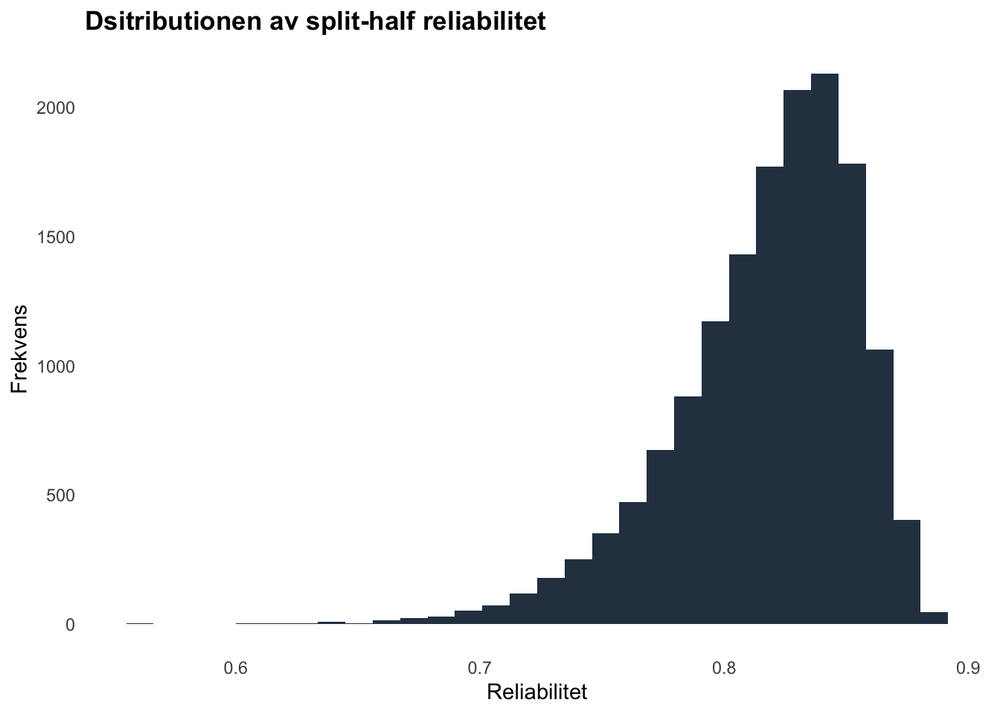
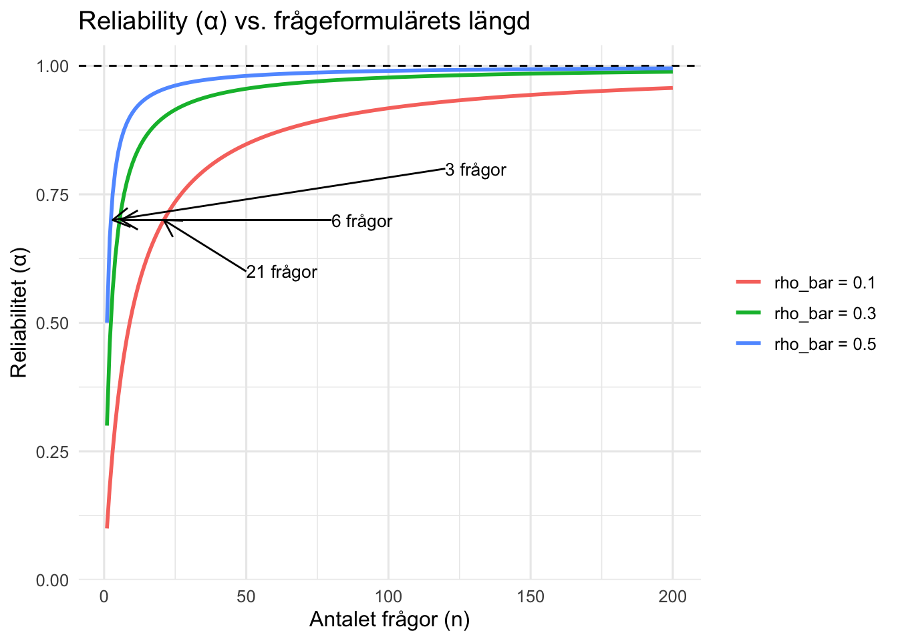

| 10 items | 12 items | 14 items | 16 items | 18 items | 20 items | 22 items | 24 items |
|---|---|---|---|---|---|---|---|
| 126 | 462 | 1716 | 6435 | 24310 | 92378 | 352716 | 1352078 |
Tabell över antalet möjliga uppdelningar av ett test utifrån antalet items.
June 19, 2025
Reliabilitet är ett centralt begrepp inom psykometrisk teori. I grunden handlar det om att särskilja det relevanta från det irrelevanta. Tankefiguren är sådan att ett frågeformuläres totala varians kan brytas ned i två delar; “error” och “true score” (dessa delar kan i sin tur brytas ned i ännu fler delar men låt oss vänta med det). Matematiskt brukar detta skrivas:
\[V_{\text{observed}} = \sigma_{\text{true score}}^2 + \sigma_{\text{error}}^2 \tag{1}\]
I ekvation (1) är \(V_{\text{observed}}\) den totala variansen, \(\sigma_{\text{true score}}^2\) den sanna variansen och \(E\) felmarginalen (error). Viktigt att förstå från denna formel är att både \(\sigma_{\text{true score}}^2\) och \(\sigma_{\text{error}}^2\) är latenta variabler. Med latent menar jag helt enkelt att de inte är direkt observerbara. Detta sätt att tänka runt reliabilitet går tillbaka till Charles Spearmans arbete under det tidiga 1900-talet [1904]. Spearman var en pionjär inom psykologisk metod och utöver att lägga grunderna för reliabilitetsteori är det han vi har att tacka för den ordinala korrelationskoefficienten samt faktoranalysen. Mycket av Spearmans arbete med reliabilitet gjordes med målet att kunna korrigera den observerade korrelationen mellan två frågeformulär eller test för deras brist på reliabilitet. På så vis var reliabilitet ett medel för ett mål; nämligen att hitta mer exakta empiriska estimat. Sedan Spearmans tidiga arbete med reliabilitet har forskning och teori därom utvecklats avsevärt. Läser man samtida artiklar på ämnet i ledande vetenskapliga tidsskrifter såsom Psykometrika är innehållet dessvärre ofta svårtillgängligt och tekniskt komplicerat. Resultatet är att framsteg och utveckling inom psykometrisk forskning sällan blir tillgängliga utanför den psykometriska fiskdammen. Detta tillkortakommande och dess potentiella orsaker har självkritiskt diskuterats i ledande psykometriska tidsskrifter [referenser]. En fara som jag ser med den uppdelning som idag finns mellan klinisk psykologi och psykometri är att psykometrikerna får tolkningsföreträde i frågor som upplevs vara mer psykometriskt orienterade. Risken finns att de som bedriver behandlingsstudier inte ser det som sin plikt att säkerställa goda psykometriska kvalitéer.
Åter till reliabilitet. Det finns flera skäl till varför man ska bry sig om reliabilitet och min lista nedanför är på intet sätt uttömmande. Här är några viktiga skäl:
Om du håller med om ett eller flera argument ovan så ska du fortsätta läsa. Jag kan omöjligen lova ett uttömande inlägg om reliabilitet men man behöver börja någonstans. Alla paragrafer nedan kan läsas för sig själva utan krav på att du ska ha läst det föregående. Jag har försökt strukturera texten så att du ska kunna välja den rubrik du tycker är intressant och bara läsa den. Själva inlägget är strukturerat på ett sådant sätt att jag börjar från början och arbetar mig framåt i tiden. Det känns mest naturligt tycker jag och kan ge en känsla för hur förståelsen för reliabilitet har förändrats över tid.
Den kanske mest intuitiva uppskattningen av ett tests reliabilitet är det som kallas test-retest reliabilitet. Metoden går ut på att administrera ett och samma test vid tidpunkt t1 och tidpunkt t2 och använda korrelationen mellan dessa två tidpunkter som ett mått på dess reliabilitet. Men varför fungerar detta? Återvänd till ekvation (1). Eftersom vi antar att fel-termen \(E\) har väntevärdet 0 och är oberoende vid olika mätttillfällen, är det bara den reliabla komponenten av testet som är gemensam mellan mätningarna. Den enda möjliga orsaken till att testet vid t1 korrelerar med samma test vid t2 är alltså att just den pålitliga delen av testet är densamma över tid.
Det finns nyanser till detta. Den reliabla komponenten av testet kan vidare brytas ned i två delar; reliabel state varians och reliabel trait varians. Låt säga att vi administrerar ett test som ska mäta personlighet och en grupp personer får svara på frågan “jag tycker om att gå på fest”. Låt säga att denna fråga ska mäta hur extrovert du är som person. Enligt ekvation (1) består variansen för detta item av en reliabel komponent och en felterm. Den reliabla komponenten kan vi vidare förstå som en okänd blandning av det stabila personlighetsdraget extraversion och ett (eller flera) flyktigt tillstånd såsom glädje. För låt säga att du fick svara på frågan ovan när du faktiskt kände dig tillfreds och glad med livet, då lär det förmodligen ha påverkat hur du svarar på frågan. För att formalisera det hela kan vi skriva ut det som;
\[ V_{\text{observed}} = \sigma_{\text{trait}}^2 + \sigma_{\text{state}}^2 + \sigma_{\text{error}}^2 \tag{2}\]
Genom test-retest reliabiliteten kan man inte skilja \(\sigma_{\text{state}}^2\) från \(\sigma_{\text{trait}}^2\). Detta är dock möjligt vid upprepade mätningar vilket kräver andra analysmetoder än korrelationsanalyser. Om man genomför test-retest reliabilitet på ett konstrukt som flukturerar mycket över tid (t.ex. humör eller känslor) är det sannolikt att man uppskattar en låg reliabilitet för testet när det i själva verket är så att test-retest korrelationen säger mer om konstrukutets variabilitet över tid. En annan svårighet med test-retest reliabiliteten är att deltagarnas responser vid det andra mättillfället påverkas av det första mättillfället. Genom att ställa frågor vid t1 kan deltagare ha tagit intryck av frågorna och börjar reflektera mer över fenomenet man önskar undersöka vilket i sin tur påverkar hur de svarar vid det andra mätttillfället. Det kan också vara fallet att deltagarna minns hur de svarade vid det första mättillfället. Av detta skäl är literaturen fylld av olika rekommendationer över vilka tidsinterval som är lämpliga för en test-retest reliabilitet och i grunden är ett sådant ställningstagande avhängigt hur du som mäter teoretiskt förstår det du önskar mäta.
Även om test-retest reliabiliteten är intuitiv så är den kostsam. För att kunna beräkna den behöver man genomföra två administreringar av samma frågeformulär. Nog hade det varit bra att kunna uppskatta reliabiliteten men med bara ett administreringstillfälle. Två forskare löser detta problem ungefär samtidigt, oberoende av varandra och deras lösning är idag känd som Spearman-Brown reliabiliteten (Spearman 1910). Deras enkla lösning gick ut på att dela ett frågeformulär i två lika stora halvor och korrelera dessa halvor med varandra. Om vi har ett frågeformulär med 10 frågor delas det in i två lika stora halvor; B och C med 5 frågor i vardera. Genom att korrelera dessa två frågeformulär med varandra kunde man få fram en korrelationskoefficient - en reliabilitetskoefficient!
\[ \rho_{SB} = \frac{2\rho_{ab}}{1+\rho_{ab}} \tag{3}\]
Även om ekvation (2) är tämligen enkel att förstå så infinner sig frågan hur man ska dela upp ett test i två halvor. Ska vi dela på mitten? Ska vi dela upp så att jämna items (item 2, item 4 o.s.v.) placeras i deltest A och udda items (item 1, item 3 o.s.v.) placeras i deltest B? Är vissa metoder att föredra framför andra? Svårigheten med split-half reliabiliteten är att beroende på hur du delar upp testet kommer du att få olika estimat. Hur man delar upp ett test i två halvor är det som i matematiken kallas för ett kobinatoriskt problem. Det finns nämligen ett sätt att räkna ut hur många olika kombinationer som är möjliga givet n. I tabelen nedan ser du hur många olika sätt det finns att dela upp ett test i två halvor utifrån antalet items. Jag har begränsat mig till n items mellan 10 och 24.
| 10 items | 12 items | 14 items | 16 items | 18 items | 20 items | 22 items | 24 items |
|---|---|---|---|---|---|---|---|
| 126 | 462 | 1716 | 6435 | 24310 | 92378 | 352716 | 1352078 |
Tabell över antalet möjliga uppdelningar av ett test utifrån antalet items.
Utifrån att det finns så många olika sätt att dela upp ett test på så förstår man att beroende på vilken uppdelning du väljer kommer du också att få väldigt olika estimat på din splif-half reliabilitet. För att citera Lee Cronbach
“If one split may give a higher coefficient than another, one can have little faith in whatever result is obtained from a single split.” (Cronbach 1951)
För att visuellt visa hur olika resultat du kan få så har jag gjort en graf över fördelningen över de olika split-half värden du får utifrån 15 000 olika uppdelningar av ett 25-item test (datan kan du läsa mer om här). Kom ihåg från tabellen ovan att det för 25 items finns mer än 1 300 000 olika sätt att dela upp testet på - för att avgränsa beräkningen har jag alltså bara valt 15 000 olika sätt.

Utöver svårigheten med hur ett test ska delas upp så utgår split-half metoden från att två deltest av ett test är parallella test. Det vill säga att de båda är lika förträffliga mått på den underliggande egenskapen du önskar mäta. Generellt kan man också säga att om split-half distributionen är stor, det vill säga att du får en stor spridning av dina estimat, så kan det vara ett tecken på att ditt test har fler än en dimension.
Slutligen ska det tilläggas att split-half reliabiliteten inte är lämplig när frågorna i ett test har inneboende ordningsföljd. Ett test av matematisk förmåga där frågornas svårighetsgrad ökar eller ett test som mäter antal besvarade frågor inom en gieven tidsrymd bör inte undersökas med split-half reliabiliteten.
Split-half metoden försåg en med ett sätt att beräkna reliabiliteten utan att behöva administrera samma test vid fler än ett tillfälle. Det var ekonomiskt och relativt enkelt. Split-half reliabiliteten var en kompromiss mellan “vi vill ha två likvärdiga test som vi kan korrelera mot varandra” men “vi vill inte administrera två test”. Samtidigt insåg man att split-half metoden medförde en rad olika svårigheter i hur man skulle dela upp ett test. För att beräkna reliabiliteten vid ett testtillfälle och utan att behöva bekymra sig om hur man ska dela upp ett test i två identiska delar utvecklades en rad olika metoder för att beräkna det som idag kallas för ett tests interna konsistens (eng: internal consistency).
Istället för att undersöka korrelationen mellan två testtillfällen eller mellan två olika halvor av ett och samma test kan den interna konsistensen beräknas genom att endast undersöka varje frågas specifika varians samt den totala variansen för ett test. Louis Guttman (Guttman 1945) föreslog sex olika lösningar på hur man kunde uppskatta ett tests interna konsistens. Lee Cronbach byggde vidare på Guttmans tredje lösning och anpassade den för frågor med en ordinal skala vilket har kommit att bli känt som Cronbachs alpha (förkortat \(\alpha\), (Cronbach 1951)). Rationalen för detta är i grunden inte särskilt olikt de tidigare metoderna och visar på hur en lösning till ett problem (i.e. hur ska vi uppskatta reliabilitet?) bygger på tidigare lösningar. Guttman, liksom Cronbach, antar att covariansen mellan frågor representerar reliabel varians. Att två frågor samvarierar beror ju på att de mäter samma underliggande konstrukt. Enskilda frågors varians däremot är en okänd blandning av reliabel varians och error. Genom att subtrahera enskild items varians från den totala variansen återstår alltså bara den “sanna” variansen och voila! Nu har vi ett mått på den reliabla variansen. Formeln för cronbach alpha är:
\[ \alpha = \frac{n}{n - 1} \left( \frac{V_t - \sum v_i}{V_t} \right) \tag{4}\]
I formeln ovan är \(V_1\) testets totala varians och \(v_i\) är enskilda frågors varians. Formeln ovan är ekvivalent med den nedan (vilket förekommer oftare i den veteskapliga literaturen på ämnet).
\[ \alpha = \frac{K}{K - 1} \left(1 - \frac{\sum_{i=1}^{K} \sigma^2_{Y_i}}{\sigma^2_X} \right) \tag{5}\]
Cronbach själv säger att \(\alpha\) “is the average of all the possible split-half coefficients for a given test.” (Cronbach 1951). Man kan också förstå \(\alpha\) som ett mått på hur själv testet korrelerar med ett fiktivt identiskt test (Cronbach 1951). Det är inte orimligt att anta att samvariationen mellan frågorna representerar reliabel varians men det blir orimligt att anta att alla frågor korrelerar lika bra med varandra. Vissa frågor i ett formulär kommer rimligen att korrelera mer med varandra än ett annat par frågor just därför att de bättre mäter det underliggande konstruktet. Ett annat antagande som går in i \(\alpha\) är att konstruktet ifråga är endimensionellt. Det är viktigt att ha i åtanke att “Only if the underlying theory of the trait being measured calls for high item intercorrelations do the correlations support construct validity” (Cronbach and Meehl 1955). Detta visar på vikten av att teoretiskt beakta huruvida \(\alpha\) är ett rimligt mått på intern konsistens för ditt test eller inte. Det finns fler antaganden som går in i \(\alpha\) men vi tar inte upp dem här (se exempelvis Green and Yang (2009) och McNeish (2018) för mer heltäckande beskrivningar av antaganden och tillkortakommanden med \(\alpha\)).
Modellbaserade mått på intern konsistens utgår från faktoranalytiska modeller. Dessa modeller undersöker kovarians-varians matrisen och försöker hitta lösningar för hur olika frågor grupperar sig i datan. Dessa modeller kallas också latent variabel analys och för att förstå dem ordentligt krävs kunskap i linjär algebra (låter värre än vad det är). Konceptuellt kan man säga att istället för att utgå från att alla frågor mäter ditt konstrukt lika väl så kan man få ut individuella uppskattningar för hur “viktiga” (den korrekta termen här är “viktad”) respektive fråga är i relation till det underliggande konstruktet. Med hjälp av sådana uppskattningar behöver man inte göra de antaganden som \(\alpha\) gör om testet; nämligen att varje fråga är ett lika gott mått på det underliggande konstruktet. Med dessa modellbaserade metoder går det också att uppskatta den interna konsistensen för det övergripande konstruktet såväl för mer specifika subfaktorer (ofta ekvivalent med subskala).
Reliabilitet är en funktion av testet, personerna som testet administreras till och omständigheter runt om som har bäring på testpoängen. I samtliga uppskattningar av reliabilitet sker någon form av analys av den varians man har i sin data. Variansen i ett givet dataset är alltid (mer eller mindre) unikt för det specifika urvalet man har till hands. Precis som med alla statistiska uppskattningar finns det därför en osäkerhet runt det reliabilitetsestimat du erhåller. Det är fullt möjligt att uppskatta en konfidensintervall för ens reliabilitetsestimat (Revelle and Condon 2019). En viktig aspekt att ta med sig från detta är att reliabilietsestimat inte är egenskaper av ett test utan av ett testpoäng. Skillnaden kan verka petig men visar också samtidigt på en tydligare konceptuell förståelse av vad reliabilitet faktiskt är. Läser man den vetenskapliga literaturen är det legio att skriva något i stil med “Reliability for test [infoga valfritt test här] was found adequate at \(\alpha = 0.8\)”. Huruvida testet är reliabelt för ditt specifika test är en empirisk fråga. Det är möjligt att tidigare studiers uppskattningar av reliabiliteten är överförbara till ditt specifika urval men det kan också vara fallet att ditt urval är annorlunda, att frågorna inte tillförlitligt mäter det du är intresserad av att studera.
Liksom många andra statistiska begrepp har reliabilitet definierats inom ett specifikt numreriskt intervall (0-1). Emedan en reliabilitet på 0 innebär total avsaknad av tillförlitlighet, liksom en reliabilitet på 1 innebär en perfekt tillförlitlighet hur ska vi först en reliabilitet på 0.5 eller 0.7? Vad är en bra reliabilitet? En rad olika konventioner har utarbetats för detta och ett av de vanligaste konventionerna är att ..
Konventioner för vad som är god reliabilitet gör livet onekligen enklare för de som behöver rapportera reliabilitet men det sker på bekostnad av kritiskt tänkande. Vad som är bra eller dålig reliabilitet är beroende av vad för sorts beslut du ska fatta baserat på ditt instrument. Så här skriver Nunnally och Bernstein (Nunnally and Bernstein 1994, 249);
“Standards of acceptable reliability are presented. These depend upon what type of decision is to be made-tests used to contrast groups need not be as reliable as tests used to make decisions about individuals-but to a large extent, the issue is one of”How high is up?“”
Det tycks mig som att detta sätt att resonera kring reliabilitet tycks ha gått förlorat. De skriver vidare:
“If important decisions are made with respect to specific test scores, a reliability of .90 is the bare minimum, and a reliability of .95 should be considered the desirable standard” (p. 265).
Det går att att ifrågasätta de siffror som Bernstein och Nunnaly presenterar men deras sätt att resonera kring reliabilitet ter sig rimligt för mig. Vad som är bra nog är ett beslut som behöver ske i en kontext.
Ett tämligen enkelt sätt att öka reliabiliteten för ett test är genom att öka mängden frågor. Reliabiliteten ökar nämligen som en funktion av antalet frågor i testet. Man brukar säga att reliabiliteten går mot 1 asympototiskt. Detta innebär att när n går mot oändligheten går reliabiliteten mot 1. I grafen nedan ser du hur reliabiliteten ökar med antalet frågor för tre olika test med en genomsnittlig inter-item korrelation på 0.1, 0.3 och 0.5. Vad som är tydligt från grafen är att oberoende hur mycket frågorna samvarierar med varandra genomsnittligt så ökar reliabiliteten för samtliga test. Vad inter-item korrelationen påverkar är mängden frågor du behöver i ditt test för att reliabiliteten ska nå vissa kritiska värden för reliabilitet. Har du ett test med en genomsnittlig inter-item korrelation på 0.5 behöver du bara 3 frågor för att nå 0.7 i \(\alpha\) men för ett test med 0.1 i inter-item korrelaiton behöver du 21 frågor för att uppnå samma nivå av reliabilitet.

Ett reliabilitetsestimat är aldrig ett självändamål – det får mening först när det sätts i relation till en teoretisk förståelse av det som mäts. Antag att vi beräknar Cronbach’s α för ett frågeformulär. Om formuläret är endimensionellt och alla frågor är avsedda att mäta samma konstruktion, då är α ett rimligt mått på intern konsistens. Om konstruktet däremot består av flera distinkta men relaterade dimensioner (t.ex. olika aspekter av emotionell reglering) kommer α att underskatta den sanna reliabiliteten, eftersom korrelationerna mellan frågor från olika dimensioner naturligt blir lägre. Det är därför avgörande att först fråga sig: vad säger teorin om mitt konstrukt?
En hög intern konsistens kan i vissa fall vara ett varningstecken. Om alla frågor är nästan identiska riskerar vi att mäta en snäv aspekt av konstruktet och förlora innehållsvaliditet. Som Cronbach och Meehl uttryckte det: “High internal consistency may lower validity. Only if the underlying theory of the trait being measured calls for high item intercorrelations do the correlations support construct validity.” (Cronbach and Meehl 1955)
En annan underliggande premiss i många reliabilitetsmått – särskilt α – är att det vi mäter är ett “common cause”-fenomen: en latent variabel som orsakar variationen i samtliga frågor. Om konstruktet i stället är ett nätverk av ömsesidigt påverkande variabler (t.ex. många psykologiska syndrom), är detta antagande tveksamt och andra modeller (t.ex. nätverksanalys eller generella faktorstrukturer) kan vara mer meningsfulla. Kort sagt: reliabilitet är inte bara en siffra mellan 0 och 1, utan en tolkning som måste bottna i en välgrundad modell av det fenomen vi vill mäta. Utan en sådan teoretisk förankring riskerar reliabilitetsmåttet att vara antingen missvisande – eller rentav meningslöst.
Detta inlägg har bara berört en bråkdel av de metoder och perspektiv som finns för att uppskatta reliabilitet. Vi har exempelvis inte gått in på interbedömarreliabilitet (t.ex. Cohens kappa), test–retestvarianter som intraklasskorrelation (ICC), eller mer avancerade ramverk som Generalizability Theory och General Latent Variable Modeling. Inte heller har vi diskuterat reliabilitet för dikotoma eller kategoriska data, eller hur reliabilitet kan uppskattas i adaptiva test och moderna IRT-modeller. Dessa metoder erbjuder ofta mer flexibla och situationsanpassade sätt att bedöma mätprecision, men kräver samtidigt mer komplexa analysverktyg och antaganden. Syftet här har varit att ge en teoretisk och historisk grund, med fokus på de klassiska reliabilitetsmåtten och deras logik, så att läsaren kan tolka och använda dem medvetet – och veta när de bör kompletteras med andra metoder.